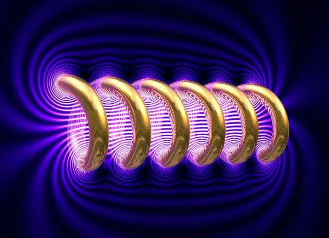
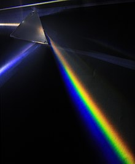
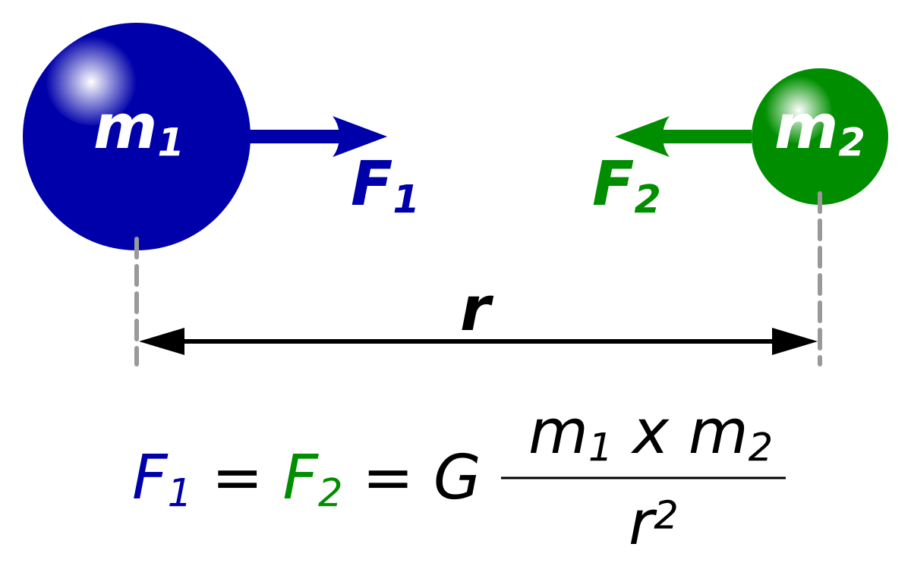

¿Qué es Física?
La física es una de las ciencias fundamentales que estudia la materia, la energía y las interacciones entre ellas. Es la ciencia que trata de entender cómo funciona el universo a nivel fundamental.
Desde la caída de una manzana hasta el movimiento de los planetas, la física nos ayuda a explicar fenómenos naturales y a desarrollar tecnologías que mejoran nuestra vida diaria.

Principales Áreas de la Física
Mecánica
La mecánica es la rama de la física que estudia el movimiento de los objetos y las fuerzas que los causan. Se divide en estática (el estudio de los objetos en reposo) y dinámica (el estudio de los objetos en movimiento)

Termodinámica
La termodinámica estudia las relaciones entre el calor, el trabajo y la energía. Las leyes de la termodinámica son fundamentales para entender cómo funcionan motores, refrigeradores y otros sistemas energéticos.
Electromagnetismo
El electromagnetismo se encarga del estudio de los campos eléctricos y magnéticos y cómo interactúan con la materia. Esta rama de la física tiene aplicaciones en dispositivos como motores eléctricos, generadores y comunicaciones inalámbricas.
Óptica
La óptica estudia la luz y su interacción con la materia. Esto incluye la reflexión, refracción y dispersión de la luz, así como el estudio de los instrumentos ópticos como lentes y microscopios.
Leyes Básicas de Física
Ley de Gravitación Universal
La ley de la gravitación universal, formulada por Isaac Newton, establece que dos cuerpos se atraen con una fuerza proporcional al producto de sus masas e inversamente proporcional al cuadrado de la distancia entre ellos.
Ley de Inercia
La ley de la inercia, también formulada por Newton, dice que un objeto en reposo permanecerá en reposo y un objeto en movimiento continuará moviéndose con velocidad constante a menos que una fuerza externa actúe sobre él.
Leyes de la Termodinámica

- Primera ley: La energía no se crea ni se destruye, solo se transforma.
- Segunda ley: El desorden en un sistema aislado tiende a aumentar con el tiempo.
- Tercera ley: A medida que la temperatura de un sistema se acerca al cero absoluto, la entropía del sistema tiende a ser constante.
Contacto
Si tienes preguntas o deseas obtener más recursos, no dudes en ponerte en contacto con nosotros. ¡Estamos aquí para ayudarte a entender mejor a la física!